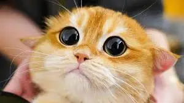

How To Get More Treats From Your Human
Posted on
-
The Gaze of Innocence: Mastering the Art of Puppy Eyes 👀
The human weakness? Our irresistibly innocent gaze. When it's treat time, unleash the big guns—those eyes that scream, "I've been deprived of treats for centuries!" Works like a charm every time. Channel your inner actor; this is your moment on the treat stage.
-
The Artful Purr-suasion: Timing is Everything 🎭
Patience is a virtue, my fellow treat enthusiasts. But timing? That's the secret sauce. Deploy your finest purr when the atmosphere is ripe. Morning snuggles, evening couch sessions—pick your moment, and let the sweet melody of your purr be the treat anthem.
-
Stealth Mode: Surprise Attacks for Maximum Treat Yield 🕵️
A true treat aficionado masters the element of surprise. Sneak attacks during human chill time or while they're distracted by shiny objects (phones, I'm looking at you) can yield maximum treat dividends. Strike swiftly and retreat into the shadows.
-
Strategic Napping: A Treat Magnet in Repose 😴
Ever notice how humans can't resist interrupting your nap with a treat? It's a well-known fact. Strategically position yourself in prime treat-requesting locations, and let your majestic nap time draw them in like moths to a flame. It's the lazy genius's guide to treat acquisition.
-
The Subtle Paw Tap: A Gentle Reminder 🐾
Humans are forgetful creatures, bless their hearts. A gentle paw tap on the leg is the subtle nudge they need to remember their treat-giving duties. It's not demanding; it's a courteous reminder of their responsibilities to the royal treat recipient.
Greetings, Snack Seekers!
Joseph, your fluffy connoisseur of all things feline, is back with the ultimate intel on a cat's true treasure—treats. Forget the fancy pawshakes; it's time for some real talk on how to maximize your treat intake. Consider this the covert handbook for treat acquisition, directly from yours truly.
Conclusion:
In the grand scheme of cat accomplishments, mastering the art of treat acquisition is a top-tier skill. From the innocent gaze to the strategic nap, each move is a calculated step toward a life filled with treats. Embrace the tactics, my fellow feline friends, and let the treats flow like a never-ending river.
Joseph 🍬🐾